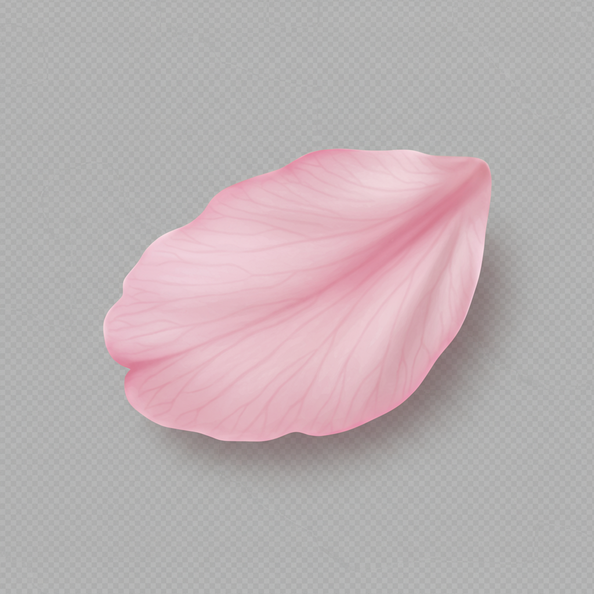
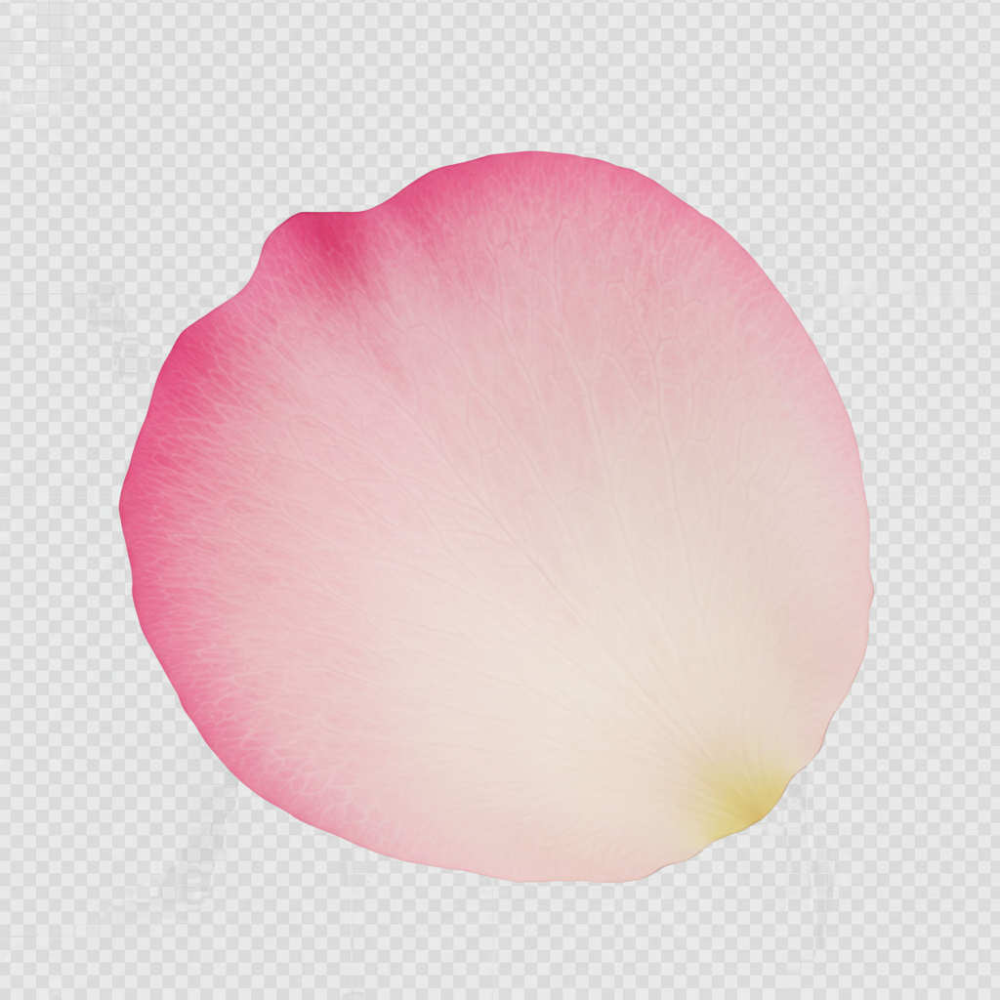
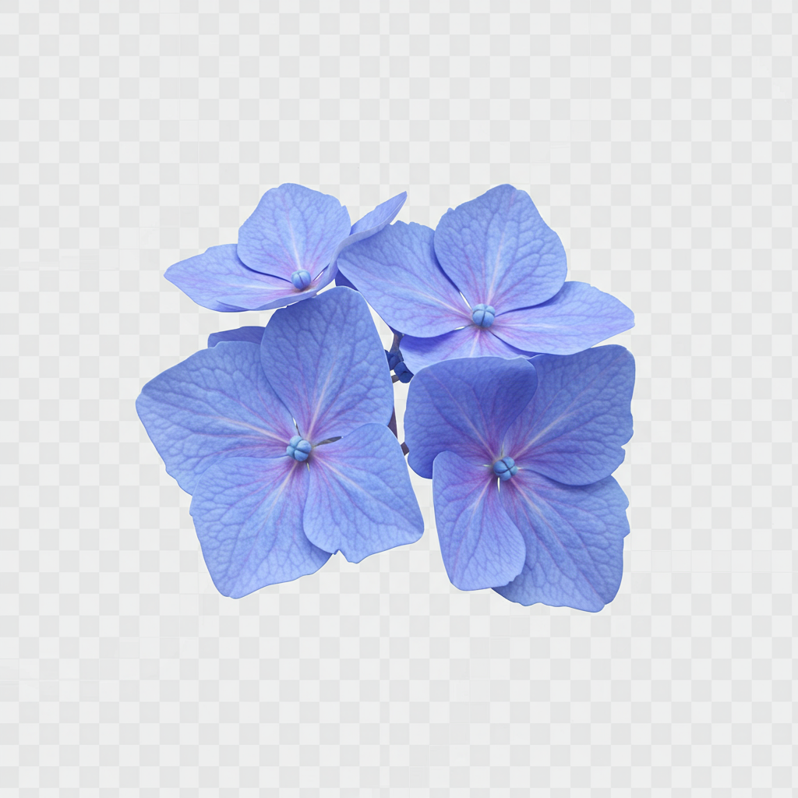

petal_sakura.png
petal_rose_pink.png
petal_ajisai.png
imagen_imagen-3.0-generate-002_20250705_020029_0.png
imagen_imagen-3.0-generate-002_20250705_020331_0.png
imagen_imagen-3.0-generate-002_20250705_020017_0.png

rose1.png

rose2.png

rose3.png

rose4.png